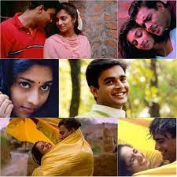

My self saitejaswini and i am from guntur i did my graduation from vignan's University in the branch ECE.My hobbies are listening to music and playing shuttle.
I watched the Tamil movie Alaipayuthey (Sakhi in Telugu) a few years ago. The film released in 2000 in Tamil, and was dubbed into my mother tongue, Telugu. I then watched it in Telugu, and rewatched it numerous times afterwards.The movie is a realistic love story between Karthik, portrayed by Madhavan and Santhi, portrayed by Shalini. (Character names in the Telugu version).
